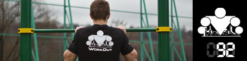
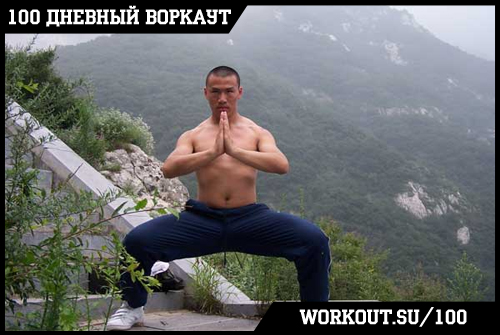

<==== Вернуться к оглавлению

Время неумолимо летит вперёд и вот уже мы выходим на финишную прямую нашей обучающей программы 100 дневный воркаут! До конца осталась всего неделя тренировок, но если вы готовы проверить свои силы и хотите внести разнообразие в круги, то я дам вам такую возможность! Вчера был последний день ПРОДВИНУТОГО блока, ну а сегодня мы начинаем ТУРБО блок!!! Правда, по традиции, сначала подведём итоги того, что мы узнали за прошедшие 7 дней:
День 85. Воркаут Фристайл
День 86. Как составить программу тренировок (теория)
День 87. Основные принципы физических тренировок
День 88. Периодизация физической нагрузки
День 89. Готовые программы тренировок на турнике и брусьях
День 90. Составление программы тренировок (практика)
День 91. Последний день ПРОДВИНУТОГО блока
Итак, в обязательном порядке делаем разминку, после чего выполняем следующее упражнение, известное как "Всадник" (оно же "Кадейра" из капоэйры, "Мабу" из ушу, "Киба-дачи" из каратэ):

Как я не старался найти в интернете нормальное видео с исполнением этого упражнения, но по-быстрому этого сделать не смог, поэтому постараюсь предоставить детальное текстовое описание. Поставьте ноги примерно на 2 ширины плеч, корпус держите прямо. Теперь присядьте до параллели с полом (90 градусов угол в коленях). Корпус держите ровно, носки можно немного развернуть вне, в спине должен быть естественный прогиб, руки можно держать вытянутыми перед собой (так проще) или на груди (сложнее). В таком положении вам нужно простоять 30-60 секунд. Считайте, что это было продолжением разминки ;)
Теперь дождитесь полного восстановления дыхания, после чего приступайте к выполнению следующего комплекса:
1. Отжимания в упоре лежа - 3 раза
2. Выпады - 2 раза на каждую ногу
3. Подтягивания - 1 раз
Все упражнения делаются без остановок в равномерном темпе, один за другим, круг за кругом. Женщины - 10 минут, мужчины - 15 минут. Если в какой-то момент вы почувствуете, что выбиваетесь из сил (по дыхалке или по мышцам), дайте себе время восстановиться и продолжайте.
======> День 93. ТУРБО комплекс БЕТА